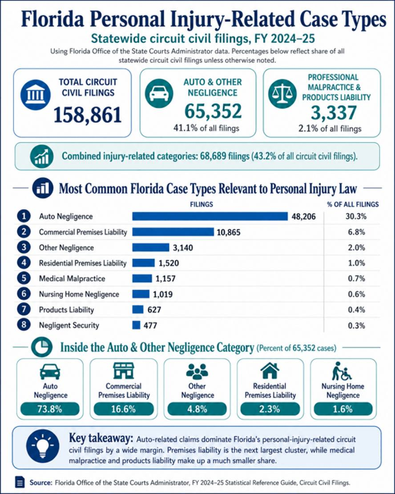

On average, a personal injury case takes 6 to 18 months to resolve, but some cases can take several years to settle. How long your specific case takes will depend on the facts of the case, including the severity of the injury, the total losses experienced, and the pain and suffering caused by the accident. A lawyer can help you determine the best approach to take for your case, and can give you insight into what to expect along the way.
Key Takeaways
- Most personal injury cases take 6 to 18 months to resolve.
- Settling too early can leave future medical costs and ongoing losses uncompensated.
- Florida has the highest personal injury filing rate in the nation, which means courts are busy and having a knowledgeable local attorney matters to your case.
What Is a Personal Injury Case?
Personal injury law covers cases where someone is hurt due to another's wrongdoing or recklessness, also called negligence. This harm can be emotional, physical, or financial and often affects the injured person's quality of life. Common types of personal injury cases include:
- Motorcycle accidents
- Car accidents
- Tractor-trailer accidents
- Slip-and-falls
- Pedestrian accidents
- Bicycle accidents
- Workplace accidents
- Product liability claims
These accidents can cause long-lasting physical changes, pain, and discomfort. They can also lead to medical expenses, lost income, property loss, and lifelong changes for the injured person.
Auto-Related Claims Lead Florida Personal Injury Filings
Florida personal injury cases cover a wide range of claims, but the numbers show that auto-related cases make up the largest share by far, accounting for 41.1% of statewide circuit civil filings.

Once it's determined what type of case you may have, the next question most people ask is how long the process takes in Florida.
How Long Do Personal Injury Cases Take in Florida?
Florida court statistics do not provide an exact average timeline for every type of personal injury case. However, Florida's civil case time standards generally aim for most non-jury civil cases to resolve within 12 months, most jury civil cases within 18 months, and complex civil cases within 30 months. In practice, many personal injury cases resolve through settlement before trial, while cases involving serious injuries, disputed liability, multiple parties, or complex damages can or may take longer.
| Case Track | Florida Time Standard |
|---|---|
| Non-jury civil cases | 12 months |
| Jury civil cases | 18 months |
| Complex civil cases | 30 months |
What Affects Your Injury Case Timeline?
One of the biggest factors that controls when a case can settle is something called Maximum Medical Improvement, or MMI. MMI is considered a milestone in a personal injury case because it signifies that either (1) the condition has stabilized to a point where future medical treatment is unnecessary or (2) the injured person has recovered from the injury as much as possible.
This milestone provides a foundation for calculating how much the case may be worth. If the case is settled too soon, before the full extent of the injuries is known, the injured person may miss the opportunity to be compensated for future medical bills, ongoing care, or losses that continue to build if the injury gets worse.
Beyond MMI, other variables include the severity of your injuries, whether liability is disputed, the number of parties involved, and how cooperative the insurance company is. Court scheduling itself can also be a factor, as Florida handles thousands of cases per year, and criminal cases are given priority over civil trials.
Even when both sides are ready to move forward, the pace of the court system can add time to the process. Patience is part of navigating a personal injury case, and understanding that delays are often outside anyone's control can help set realistic expectations.
The Stages of a Personal Injury Case
Every case is different to some degree. For example, a product liability case is treated differently than a car accident claim, but they do have a commonality: they are capable of being settled at any point throughout the process. However, settlement should not happen before the full extent of the injury is understood.
The stages of a personal injury case include:
- Medical Treatment and Recovery: After the accident, the injured person usually begins medical treatment. This is important because it creates records of the injury, the treatment needed, and how the injury affects their daily life.
- Investigation and Evidence Gathering: An attorney reviews the facts of the accident, gathers evidence, speaks with witnesses, reviews medical records, and determines who may be legally responsible.
- Maximum Medical Improvement: A case typically cannot be fully valued until the injured person reaches Maximum Medical Improvement, or MMI.
- Calculating Damages: Once the full extent of the injuries is known, the attorney can calculate damages.
- Demand and Negotiation: The attorney may send a demand to the insurance company or responsible party. From there, both sides may negotiate to try to reach a fair settlement.
- Filing a Lawsuit: If the case cannot be resolved through a settlement, a lawsuit may be filed. This does not always mean the case will go to trial, but it does move the case into the court system.
- Discovery and Mediation: During discovery, both sides exchange information, documents, and evidence. Many cases also go through mediation, where both sides try to resolve the case before trial.
- Trial or Settlement: Most personal injury cases settle before trial. However, if both sides cannot agree, the case may go before a judge or jury, who will decide the outcome.
For a closer look at how civil cases move through the local system, the Florida Rules of Civil Procedure outline the formal process used in Florida courts. These rules help explain the steps that may happen after a personal injury claim is filed, including discovery, mediation, settlement procedures, and trial.
Florida Rules of Civil Procedure, The Florida Bar, effective April 1, 2026 | New Window | Opens PDF
The insurance company offered me a settlement. Should I take it?
Not always. A quick settlement may not account for the full impact of an injury. Insurance companies also have claims adjusters that will work to try and undervalue your claim. This is why we advise to never make any statement on record, as it could potentially be used against you later. Before you agree to anything, it's important to understand what your case is worth by sitting down with an experienced personal injury lawyer.
Not sure where you are in the personal injury process?
A personal injury case can take time, especially if your injuries are still developing. Before you settle, make sure that the settlement accounts for the full extent of injuries, losses, future medical needs, and the pain and suffering caused by the accident. A local attorney like Hightower & Hightower can help you understand exactly where you stand and what your case may be worth. Contact Hightower & Hightower, P.A. today to schedule a consultation and get guidance on your next step.